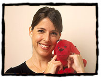
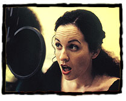
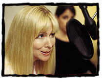

|
 |
 |
| Puppy Clifford | |
|  |
The voice of Clifford the Puppy, Lara Jill Miller is best known for her starring role as "Samantha" on the hit NBC sit-com Gimme A Break. After that series' 6-year run, Miller made a move to the East Coast where she starred opposite Dick Van Dyke in the Broadway revival of The Music Man. She enrolled at NYU with a dual major in Politics and French. Miller then attended Fordham University School of Law and proceeded to her second career as a litigation attorney. But the acting bug bit once again and Miller made her way back West. Her series credits include a recurring role on Nickelodeon's The Amanda Show, PAX TV's Chicken Soup for the Soul and she can be heard every week as "Kari" on FOX's hit animated series DIGIMON. |
| Emily Elizabeth | |
|  |
Grey Delisle returns in the new Clifford's Puppy Days TV series as the voice of Emily Elizabeth. While pursuing a career in stand-up comedy, Delisle was discovered by a voice director impressed by her unique talent for characterizations. Since then her career has blossomed. Delisle's voice work can be heard in the role of "Daphne" on Warner Brothers' animated video series, The New Adventures of Scooby Doo, as well as the lead role opposite John Ritter in the PBS series Clifford The Big Red Dog. She is also a series regular on Fairly Odd Parents, Grim and Evil, Robot Jones, As Told by Ginger, The Weekenders, Clone Wars and Danny Phantom. Delisle has guest starred on many other shows, including The Power Puff Girls, Johnny Bravo, Timon and Pumba and The Wild Thornberry's. |
| Daffodil | |
|  | The voice of Jetta in the Clifford The Big Red Dog series, Kath Soucie returns to work with Clifford as the voice of Emily Elizabeth's pet rabbit, Daffodil. One of the top voice-over actors working today, Soucie began her career in New York as a theatrical actress followed by featured roles in episodics and movies of the week after her move to Los Angeles. She is credited with many award-winning commercials and has been heard on national corporate campaign ads. Soucie's film credits include Disney's Return to Neverland, Dumbo II, Beauty & The Beast, Warner Bros.' Space Jam among many others. She has brought life to hundreds of animated characters, both primetime and daytime. Other series credits include Disney's 101 Dalmations, Gargoyles, Jimmy Neutron and Kim Possible. Her vocal versatility can be heard on such Emmy award-winning classics as Captain Planet and Tiny Toon Adventures. |
| Norville | |
|
Henry Winkler is the voice of Clifford's feathered friend, Norville. Winkler is an American icon--his amazing award-winning career spans nearly three decades of success as an actor, director and producer. Winkler is currently busy working behind the scenes executive producing shows, including Hollywood Squares, Wintuition and providing executive consulting for Strange Days at Blake Halsey High, a new Saturday morning adventure on NBC. Winkler is also authoring a series of four novels entitled Hank Zipper: The World's Most Amazing Under-Achiever. The books are inspired by Winkler's struggle with Dyslexia throughout his education. |
|
| Shun | |
Lauren Tom is the voice of Emily Elizabeth's friend Shun. Tom is also an Obie Award-winning actress known for her roles as the dancer who couldn't quite tap in Broadway's A Chorus Line; the dutiful daughter in the film The Joy Luck Club; and a recurring character on NBC's Friends. Other television credits include NBC's DAG, ABC's Grace Under Fire and Lifetime's The Division. Tom's voice work can be heard in the animated series Futurama, King of the Hill, Teacher's Pet, Rocket Power, Zeta, Max Steele, Batman, Superman, Fillmore, Totally Spies and Kids Next Door. She has appeared on Broadway in Hurlyburly and Doonsesbury and in the films When a Man Loves A Woman, Mr. Jones and With Friends Like These. |
|
| Nina | |
Masiela Lusha plays Emily Elizabeth's friend Nina. Known mostly for her role as George Lopez's daughter on the ABC hit sitcom, The George Lopez Show, Lusha is an accomplished performer and author. Her film and television credits include roles on Disney's Lizzie McGuire, Down With Me, My Father's Eulogy and 007th Grade Young James Bond Chronicles. Lusha's theater work includes Charlie and the Chocolate Factory, Snow White, Last Dress Rehearsal and The Buzz. Recipient of the "Youngest Author in the World to Publish a Book," and "The Best Top Ten Talented Poets for North America," Lusha is the author of Inner Thoughts, which was published in 1998, when she was twelve years old. |
|
| Evan | |
The voice of Emily Elizabeth's neighbor, friend, and sometimes babysitter, Evan, is Orlando Brown. Brown is best known for his role as "Eddie" on the popular Disney series, That's So Raven. Brown is also the voice of "Cornelius Fillmore" in Fillmore and the voice of Sticky Webb in Proud Family. Brown's television credits also include Lizzie McGuire, Moesha, Malcolm & Eddie, The Jamie Foxx Show among others. He is also playing the role of "Frankie" in the upcoming Eddie's Million Dollar Cook-off. |
|
|